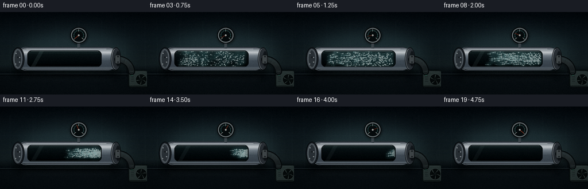
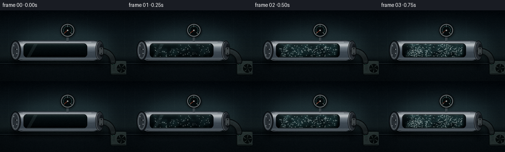
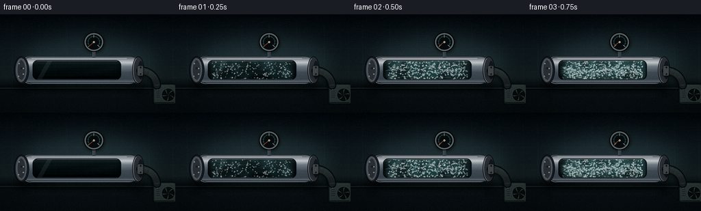
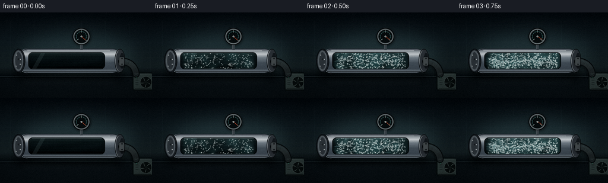
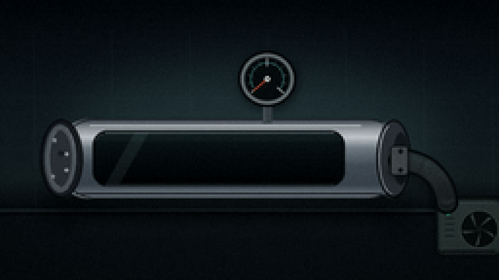
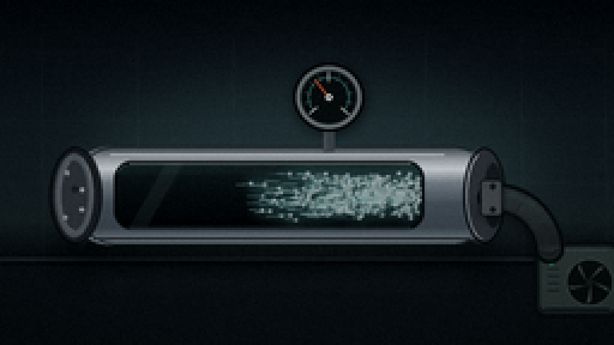
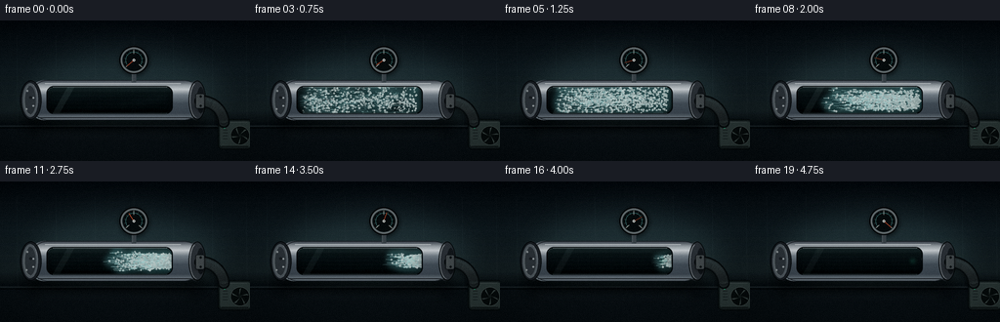
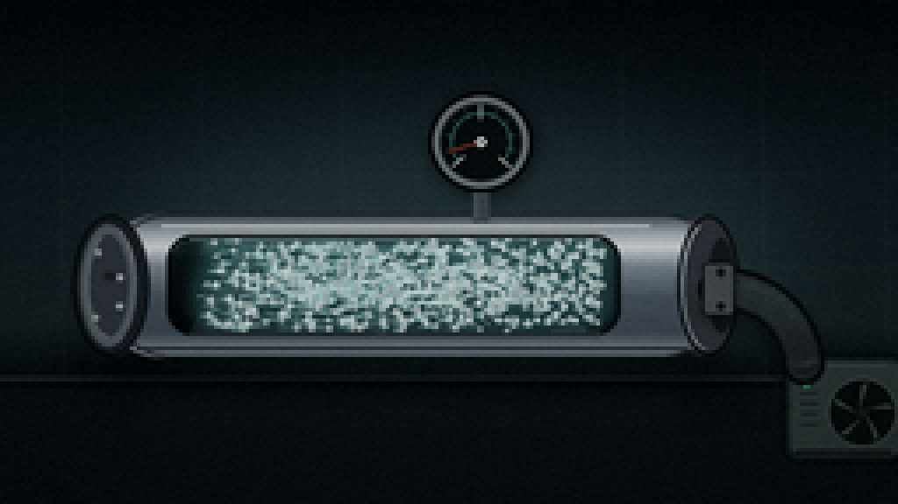
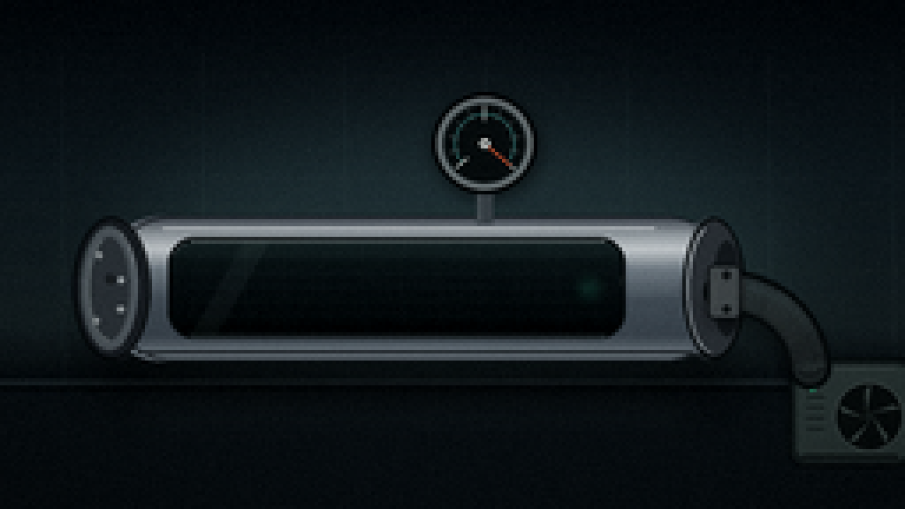
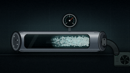

CODING AGENTS AS PIXEL WORLD MODELS
traex/DeepSeek-V4.1-Flash · mechanics_0025
点击播放 · 原生 RGB 像素
逐轮保存的候选
回放视频、检查图与代码变化。
每份候选均可单独播放。实际图片检查记录在下方工具轨迹中。
候选 01播放与检查图
点击播放 · 原生 RGB 像素


展开代码变化
--- 上一保存版本
+++ 本次保存版本
@@ -0,0 +1,502 @@
+from pathlib import Path
+import math
+
+import numpy as np
+from PIL import Image, ImageChops, ImageDraw, ImageFilter
+
+import artifact_io
+
+
+W, H, N, FPS = 256, 144, 20, 4.0
+S = 4
+RNG = np.random.default_rng(20261111)
+
+
+def sc(value):
+ return int(round(value * S))
+
+
+def box(values):
+ return tuple(sc(value) for value in values)
+
+
+def vertical_gradient(width, height, stops):
+ ys = np.linspace(0.0, 1.0, height, dtype=np.float32)
+ positions = np.array([stop[0] for stop in stops], dtype=np.float32)
+ colors = np.array([stop[1] for stop in stops], dtype=np.float32)
+ channels = [np.interp(ys, positions, colors[:, channel]) for channel in range(3)]
+ gradient = np.stack(channels, axis=1)
+ return np.repeat(gradient[:, None, :], width, axis=1).astype(np.uint8)
+
+
+def paste_mask(image, fill, mask):
+ image.paste(fill, (0, 0), mask)
+
+
+def rounded_mask(size, rect, radius):
+ mask = Image.new("L", size, 0)
+ ImageDraw.Draw(mask).rounded_rectangle(box(rect), radius=sc(radius), fill=255)
+ return mask
+
+
+def draw_soft_shadow(image, rect, radius, blur, opacity):
+ layer = Image.new("RGBA", image.size, (0, 0, 0, 0))
+ draw = ImageDraw.Draw(layer)
+ draw.rounded_rectangle(box(rect), radius=sc(radius), fill=(0, 0, 0, opacity))
+ layer = layer.filter(ImageFilter.GaussianBlur(sc(blur)))
+ image.alpha_composite(layer)
+
+
+def make_background():
+ width, height = W * S, H * S
+ gradient = vertical_gradient(
+ width,
+ height,
+ [
+ (0.00, (7, 12, 16)),
+ (0.34, (17, 27, 31)),
+ (0.64, (22, 32, 34)),
+ (0.73, (10, 16, 19)),
+ (1.00, (5, 8, 10)),
+ ],
+ )
+ image = Image.fromarray(gradient, "RGB").convert("RGBA")
+
+ glow = Image.new("RGBA", image.size, (0, 0, 0, 0))
+ glow_draw = ImageDraw.Draw(glow)
+ glow_draw.ellipse(box((20, 21, 238, 126)), fill=(91, 131, 130, 48))
+ glow = glow.filter(ImageFilter.GaussianBlur(sc(18)))
+ image.alpha_composite(glow)
+
+ walls = Image.new("RGBA", image.size, (0, 0, 0, 0))
+ wall_draw = ImageDraw.Draw(walls)
+ for x in (17, 57, 97, 137, 177, 217, 252):
+ wall_draw.line([(sc(x), sc(15)), (sc(x + 1), sc(108))], fill=(129, 159, 158, 12), width=sc(0.45))
+ for y in (22, 50, 76, 101):
+ wall_draw.line([(0, sc(y)), (width, sc(y))], fill=(185, 204, 200, 7), width=sc(0.35))
+ image.alpha_composite(walls)
+
+ bench = Image.new("RGBA", image.size, (0, 0, 0, 0))
+ bench_draw = ImageDraw.Draw(bench)
+ bench_draw.rectangle(box((0, 108, 256, 144)), fill=(11, 17, 20, 255))
+ bench_draw.line([(0, sc(108)), (width, sc(108))], fill=(116, 140, 139, 65), width=sc(0.8))
+ bench_draw.line([(0, sc(110)), (width, sc(110))], fill=(4, 7, 8, 190), width=sc(1.1))
+ image.alpha_composite(bench)
+
+ reflection = Image.new("RGBA", image.size, (0, 0, 0, 0))
+ reflect_draw = ImageDraw.Draw(reflection)
+ reflect_draw.rounded_rectangle(box((34, 111, 199, 122)), radius=sc(6), fill=(59, 77, 79, 38))
+ reflection = reflection.filter(ImageFilter.GaussianBlur(sc(5)))
+ image.alpha_composite(reflection)
+
+ return image
+
+
+def draw_pipe(image):
+ draw_soft_shadow(image, (24, 93, 211, 112), 12, 7, 150)
+
+ body_mask = rounded_mask(image.size, (27, 61, 207, 102), 19)
+ body_fill = Image.fromarray(
+ vertical_gradient(
+ image.width,
+ image.height,
+ [
+ (0.36, (33, 39, 44)),
+ (0.43, (64, 72, 78)),
+ (0.46, (135, 145, 148)),
+ (0.49, (179, 188, 189)),
+ (0.53, (103, 115, 121)),
+ (0.59, (62, 73, 80)),
+ (0.66, (55, 65, 72)),
+ (0.70, (104, 116, 121)),
+ (0.73, (43, 50, 55)),
+ ],
+ ),
+ "RGB",
+ ).convert("RGBA")
+ paste_mask(image, body_fill, body_mask)
+
+ texture = Image.new("RGBA", image.size, (0, 0, 0, 0))
+ texture_draw = ImageDraw.Draw(texture)
+ for _ in range(175):
+ x = RNG.uniform(30, 204)
+ y = RNG.uniform(63, 100)
+ length = RNG.uniform(4, 33)
+ alpha = int(RNG.uniform(5, 18))
+ tone = int(RNG.uniform(150, 230))
+ texture_draw.line(
+ [(sc(x), sc(y)), (sc(min(205, x + length)), sc(y + RNG.uniform(-0.12, 0.12)))],
+ fill=(tone, tone + 5, tone + 7, alpha),
+ width=max(1, sc(0.18)),
+ )
+ texture.putalpha(ImageChops.multiply(texture.getchannel("A"), body_mask))
+ image.alpha_composite(texture)
+
+ details = Image.new("RGBA", image.size, (0, 0, 0, 0))
+ detail_draw = ImageDraw.Draw(details)
+ detail_draw.rounded_rectangle(box((30, 61, 207, 102)), radius=sc(19), outline=(18, 23, 27, 210), width=sc(0.8))
+ detail_draw.line([(sc(46), sc(64.4)), (sc(185), sc(64.4))], fill=(221, 230, 228, 145), width=sc(0.75))
+ detail_draw.line([(sc(49), sc(66.0)), (sc(181), sc(66.0))], fill=(124, 139, 141, 72), width=sc(0.55))
+ detail_draw.line([(sc(39), sc(99.4)), (sc(196), sc(99.4))], fill=(4, 7, 9, 180), width=sc(1.1))
+
+ for x in (33, 200):
+ detail_draw.rounded_rectangle(box((x - 4.2, 61.2, x + 4.2, 101.8)), radius=sc(4.2), fill=(50, 57, 61, 105))
+ detail_draw.line([(sc(x - 2.1), sc(64.5)), (sc(x - 2.1), sc(98.5))], fill=(178, 187, 186, 85), width=sc(0.55))
+ detail_draw.line([(sc(x + 2.4), sc(64.5)), (sc(x + 2.4), sc(98.5))], fill=(8, 11, 13, 160), width=sc(0.7))
+ image.alpha_composite(details)
+
+ cap = Image.new("RGBA", image.size, (0, 0, 0, 0))
+ cap_draw = ImageDraw.Draw(cap)
+ cap_draw.ellipse(box((20.5, 61.2, 42.5, 101.8)), fill=(24, 29, 33, 255), outline=(4, 7, 8, 210), width=sc(0.9))
+ cap_draw.ellipse(box((22.8, 64.0, 38.8, 99.0)), fill=(73, 82, 86, 255), outline=(146, 157, 158, 75), width=sc(0.5))
+ cap_draw.ellipse(box((25.1, 67.0, 36.4, 96.0)), fill=(42, 49, 53, 255))
+ cap_draw.arc(box((24.8, 66.8, 36.8, 96.2)), 92, 250, fill=(177, 188, 187, 110), width=sc(0.65))
+ for bx, by in ((27.8, 72.0), (27.2, 90.6), (34.2, 79.2), (34.0, 87.3)):
+ cap_draw.ellipse(box((bx - 0.9, by - 0.9, bx + 0.9, by + 0.9)), fill=(169, 178, 177, 180))
+ cap_draw.ellipse(box((29.7, 77.6, 32.4, 80.3)), fill=(15, 19, 21, 220))
+ image.alpha_composite(cap)
+
+ right_cap = Image.new("RGBA", image.size, (0, 0, 0, 0))
+ right_draw = ImageDraw.Draw(right_cap)
+ right_draw.ellipse(box((193.0, 61.5, 210.8, 101.5)), fill=(41, 47, 51, 255), outline=(5, 8, 9, 210), width=sc(0.9))
+ right_draw.arc(box((194.3, 63.4, 208.7, 99.7)), 93, 252, fill=(181, 191, 189, 115), width=sc(0.65))
+ right_draw.ellipse(box((201.5, 68.0, 209.6, 95.0)), fill=(20, 25, 28, 255))
+ image.alpha_composite(right_cap)
+
+
+def window_mask(image):
+ return rounded_mask(image.size, (48.5, 68.0, 176.0, 95.0), 7.2)
+
+
+def draw_window_base(image, frame):
+ mask = window_mask(image)
+ inner = Image.fromarray(
+ vertical_gradient(
+ image.width,
+ image.height,
+ [
+ (0.45, (8, 15, 17)),
+ (0.49, (13, 23, 24)),
+ (0.56, (8, 14, 16)),
+ (0.64, (4, 8, 9)),
+ ],
+ ),
+ "RGB",
+ ).convert("RGBA")
+ paste_mask(image, inner, mask)
+
+ depth = Image.new("RGBA", image.size, (0, 0, 0, 0))
+ depth_draw = ImageDraw.Draw(depth)
+ depth_draw.rectangle(box((49, 68, 176, 72.5)), fill=(40, 57, 57, 42))
+ depth_draw.rectangle(box((49, 91.8, 176, 95)), fill=(0, 3, 4, 135))
+ depth_draw.line([(sc(51), sc(69.0)), (sc(173), sc(69.0))], fill=(123, 158, 155, 42), width=sc(0.45))
+ depth.putalpha(ImageChops.multiply(depth.getchannel("A"), mask))
+ image.alpha_composite(depth)
+
+
+def airflow_geometry(t, frame):
+ x_left, x_right = 53.0, 171.5
+ cy = 81.5
+ motes = []
+ wisps = []
+
+ for index in range(520):
+ x0 = RNG.uniform(x_left + 1.0, x_right - 1.0)
+ y0 = cy + float(np.clip(RNG.normal(0, 7.3), -12.0, 12.0))
+ delay = RNG.uniform(0.005, 0.21)
+ duration = RNG.uniform(0.60, 0.82)
+ phase = RNG.uniform(0, math.tau)
+ swirl = RNG.uniform(0.7, 2.8)
+ size = RNG.uniform(0.35, 1.25)
+ warmth = RNG.uniform(0.0, 1.0)
+ p = float(np.clip((t - delay) / duration, 0.0, 1.0))
+ if p <= 0.0 or p >= 1.0:
+ continue
+ ease = p * p * (3.0 - 2.0 * p)
+ x = x0 + (176.5 - x0) * ease
+ y = cy + (y0 - cy) * (1.0 - 0.57 * ease) + math.sin(p * 8.0 + phase) * swirl * (1.0 - p)
+ fade = min(1.0, p / 0.08) * min(1.0, (1.0 - p) / 0.16)
+ motes.append((x, y, size, fade, warmth, phase, p, x0, y0, delay, duration))
+
+ for index in range(55):
+ x0 = RNG.uniform(x_left, x_right - 4)
+ y0 = cy + float(np.clip(RNG.normal(0, 8.2), -12.5, 12.5))
+ delay = RNG.uniform(0.0, 0.16)
+ duration = RNG.uniform(0.58, 0.84)
+ phase = RNG.uniform(0, math.tau)
+ length = RNG.uniform(4.5, 13.0)
+ p = float(np.clip((t - delay) / duration, 0.0, 1.0))
+ if p <= 0.0 or p >= 1.0:
+ continue
+ ease = p * p * (3.0 - 2.0 * p)
+ x = x0 + (176.5 - x0) * ease
+ y = cy + (y0 - cy) * (1.0 - 0.58 * ease) + math.sin(p * 7.0 + phase) * 1.6 * (1.0 - p)
+ fade = min(1.0, p / 0.10) * min(1.0, (1.0 - p) / 0.15)
+ wisps.append((x, y, length, fade, phase))
+
+ return motes, wisps
+
+
+def draw_air(image, frame, t):
+ mask = window_mask(image)
+ motes, wisps = airflow_geometry(t, frame)
+
+ haze = Image.new("RGBA", image.size, (0, 0, 0, 0))
+ haze_draw = ImageDraw.Draw(haze)
+ base_alpha = int(30 * (1.0 - t) ** 1.15)
+ for index in range(7):
+ y = 73.0 + index * 3.0
+ haze_draw.line([(sc(52), sc(y)), (sc(173), sc(y + 0.4 * math.sin(index + frame)))], fill=(71, 137, 139, base_alpha), width=sc(0.8))
+ haze = haze.filter(ImageFilter.GaussianBlur(sc(2.2)))
+ haze.putalpha(ImageChops.multiply(haze.getchannel("A"), mask))
+ image.alpha_composite(haze)
+
+ glow = Image.new("RGBA", image.size, (0, 0, 0, 0))
+ glow_draw = ImageDraw.Draw(glow)
+ for x, y, size, fade, warmth, phase, p, x0, y0, delay, duration in motes:
+ alpha = int(42 * fade)
+ radius = 1.5 + size * 3.1
+ glow_draw.ellipse(
+ box((x - radius, y - radius, x + radius, y + radius)),
+ fill=(100 + int(warmth * 24), 205, 205, alpha),
+ )
+ glow = glow.filter(ImageFilter.GaussianBlur(sc(2.7)))
+ glow.putalpha(ImageChops.multiply(glow.getchannel("A"), mask))
+ image.alpha_composite(glow)
+
+ wisps_layer = Image.new("RGBA", image.size, (0, 0, 0, 0))
+ wisp_draw = ImageDraw.Draw(wisps_layer)
+ for x, y, length, fade, phase in wisps:
+ x1 = max(51.0, x - length)
+ y1 = y + 0.7 * math.sin(phase + x * 0.15)
+ alpha = int(46 * fade)
+ wisp_draw.line([(sc(x1), sc(y1)), (sc(x), sc(y))], fill=(146, 211, 211, alpha), width=max(1, sc(0.34)))
+ wisp_draw.line([(sc(x1 + 1.5), sc(y1 - 0.5)), (sc(x), sc(y - 0.3))], fill=(221, 239, 233, int(alpha * 0.45)), width=1)
+
+ main = Image.new("RGBA", image.size, (0, 0, 0, 0))
+ main_draw = ImageDraw.Draw(main)
+ for x, y, size, fade, warmth, phase, p, x0, y0, delay, duration in motes:
+ prev_x = x0 + (176.5 - x0) * max(0.0, p - 0.035) ** 2 * (3.0 - 2.0 * max(0.0, p - 0.035))
+ prev_y = y + 0.5 * math.sin(phase + frame * 0.7)
+ alpha = int((70 + 100 * fade) * (0.68 + 0.32 * warmth))
+ radius = max(1, sc(0.28 + size * 0.50))
+ main_draw.line(
+ [(sc(prev_x), sc(prev_y)), (sc(x), sc(y))],
+ fill=(184, 231, 227, alpha),
+ width=max(1, sc(0.22 + size * 0.20)),
+ )
+ if size > 0.72:
+ main_draw.ellipse(box((x - radius / S, y - radius / S, x + radius / S, y + radius / S)), fill=(232, 244, 238, int(alpha * 0.82)))
+
+ for layer in (wisps_layer, main):
+ layer.putalpha(ImageChops.multiply(layer.getchannel("A"), mask))
+ image.alpha_composite(layer)
+
+ glass = Image.new("RGBA", image.size, (0, 0, 0, 0))
+ glass_draw = ImageDraw.Draw(glass)
+ glass_draw.polygon(
+ [(sc(69), sc(68.2)), (sc(76), sc(68.2)), (sc(61), sc(94.8)), (sc(54), sc(94.8))],
+ fill=(184, 225, 220, 10 + int(9 * (1.0 - t))),
+ )
+ glass_draw.line([(sc(53), sc(94.0)), (sc(172), sc(94.0))], fill=(181, 219, 214, 25), width=sc(0.35))
+ glass.putalpha(ImageChops.multiply(glass.getchannel("A"), mask))
+ image.alpha_composite(glass)
+
+ rim = Image.new("RGBA", image.size, (0, 0, 0, 0))
+ rim_draw = ImageDraw.Draw(rim)
+ rim_draw.rounded_rectangle(box((47.6, 67.1, 176.8, 95.8)), radius=sc(7.5), outline=(3, 7, 8, 235), width=sc(1.15))
+ rim_draw.line([(sc(54), sc(68.0)), (sc(171), sc(68.0))], fill=(192, 205, 201, 130), width=sc(0.58))
+ rim_draw.line([(sc(54), sc(94.9)), (sc(171), sc(94.9))], fill=(84, 100, 101, 120), width=sc(0.52))
+ image.alpha_composite(rim)
+
+
+def pressure_at(t, frame):
+ eased = t * t * (3.0 - 2.0 * t)
+ return float(np.clip(0.08 * eased + 0.92 * (t ** 1.7), 0.0, 1.0))
+
+
+def draw_gauge(image, frame, t):
+ cx, cy = 137.0, 40.5
+ pressure = pressure_at(t, frame)
+
+ shadow = Image.new("RGBA", image.size, (0, 0, 0, 0))
+ shadow_draw = ImageDraw.Draw(shadow)
+ shadow_draw.ellipse(box((cx - 14.8, cy - 13.2, cx + 16.0, cy + 16.0)), fill=(0, 0, 0, 125))
+ shadow = shadow.filter(ImageFilter.GaussianBlur(sc(2.2)))
+ image.alpha_composite(shadow)
+
+ gauge = Image.new("RGBA", image.size, (0, 0, 0, 0))
+ draw = ImageDraw.Draw(gauge)
+ draw.rectangle(box((cx - 2.3, 52.8, cx + 2.3, 63.2)), fill=(53, 62, 66, 255))
+ draw.line([(sc(cx - 1.6), sc(53.2)), (sc(cx - 1.6), sc(62.2))], fill=(164, 175, 173, 95), width=sc(0.5))
+ draw.ellipse(box((cx - 14.7, cy - 14.2, cx + 14.7, cy + 14.2)), fill=(20, 25, 27, 255), outline=(4, 7, 8, 255), width=sc(1.0))
+ draw.ellipse(box((cx - 13.5, cy - 13.0, cx + 13.5, cy + 13.0)), fill=(92, 103, 104, 255), outline=(181, 190, 187, 120), width=sc(0.65))
+ draw.ellipse(box((cx - 11.7, cy - 11.2, cx + 11.7, cy + 11.2)), fill=(9, 14, 15, 255), outline=(28, 35, 36, 255), width=sc(0.5))
+
+ arc_radius = 8.5
+ draw.arc(
+ box((cx - arc_radius, cy - arc_radius, cx + arc_radius, cy + arc_radius)),
+ 140,
+ 400,
+ fill=(72, 160, 153, 170),
+ width=sc(0.45),
+ )
+ for index in range(11):
+ fraction = index / 10.0
+ angle = math.radians(140.0 + 260.0 * fraction)
+ inner = 7.4 if index % 5 else 6.6
+ outer = 10.2 if index % 5 else 10.7
+ x1 = cx + math.cos(angle) * inner
+ y1 = cy + math.sin(angle) * inner
+ x2 = cx + math.cos(angle) * outer
+ y2 = cy + math.sin(angle) * outer
+ color = (229, 239, 230, 215) if index % 5 == 0 else (147, 165, 160, 155)
+ draw.line([(sc(x1), sc(y1)), (sc(x2), sc(y2))], fill=color, width=sc(0.34 if index % 5 else 0.55))
+
+ needle_angle = math.radians(140.0 + 260.0 * pressure + 1.3 * math.sin(frame * 1.3) * (1.0 - t))
+ needle_len = 9.3
+ nx = cx + math.cos(needle_angle) * needle_len
+ ny = cy + math.sin(needle_angle) * needle_len
+ draw.line([(sc(cx), sc(cy)), (sc(nx), sc(ny))], fill=(4, 7, 8, 210), width=sc(1.3))
+ draw.line([(sc(cx), sc(cy)), (sc(nx), sc(ny))], fill=(239, 103, 61, 255), width=sc(0.62))
+ draw.ellipse(box((cx - 1.55, cy - 1.55, cx + 1.55, cy + 1.55)), fill=(218, 224, 217, 255), outline=(37, 44, 44, 255), width=sc(0.35))
+ draw.ellipse(box((cx - 0.5, cy - 0.5, cx + 0.5, cy + 0.5)), fill=(35, 41, 41, 255))
+ draw.arc(box((cx - 11.4, cy - 11.0, cx + 11.4, cy + 11.0)), 202, 325, fill=(231, 239, 231, 42), width=sc(0.35))
+ image.alpha_composite(gauge)
+
+
+def cubic_bezier(points, samples=64):
+ p0, p1, p2, p3 = points
+ values = []
+ for index in range(samples + 1):
+ u = index / samples
+ v = 1.0 - u
+ x = v**3 * p0[0] + 3 * v**2 * u * p1[0] + 3 * v * u**2 * p2[0] + u**3 * p3[0]
+ y = v**3 * p0[1] + 3 * v**2 * u * p1[1] + 3 * v * u**2 * p2[1] + u**3 * p3[1]
+ values.append((x, y))
+ return values
+
+
+def draw_pump_and_hose(image, frame, t):
+ vibration = math.sin(frame * 2.35) * 0.26 * (1.0 - 0.25 * t)
+ hose_points = cubic_bezier(
+ [(205.0, 82.5), (217.0, 82.0 + vibration), (228.0, 91.0 + vibration), (229.0, 104.0)],
+ samples=54,
+ )
+
+ shadow = Image.new("RGBA", image.size, (0, 0, 0, 0))
+ shadow_draw = ImageDraw.Draw(shadow)
+ for x, y in hose_points:
+ shadow_draw.ellipse(box((x - 6.2, y + 1.0, x + 6.2, y + 9.2)), fill=(0, 0, 0, 115))
+ shadow = shadow.filter(ImageFilter.GaussianBlur(sc(2.5)))
+ image.alpha_composite(shadow)
+
+ pump = Image.new("RGBA", image.size, (0, 0, 0, 0))
+ draw = ImageDraw.Draw(pump)
+ draw.rounded_rectangle(box((223.0, 101.0, 258.0, 132.0)), radius=sc(4.5), fill=(19, 27, 27, 255), outline=(5, 9, 10, 255), width=sc(0.8))
+ draw.rounded_rectangle(box((225.2, 103.2, 256.8, 129.7)), radius=sc(3.3), fill=(42, 54, 52, 255))
+ draw.line([(sc(228), sc(104.1)), (sc(253), sc(104.1))], fill=(132, 148, 141, 105), width=sc(0.55))
+ draw.line([(sc(227), sc(129.0)), (sc(254), sc(129.0))], fill=(2, 5, 6, 180), width=sc(0.8))
+ draw.ellipse(box((236.0, 108.0, 255.5, 127.5)), fill=(10, 15, 15, 255), outline=(78, 91, 87, 210), width=sc(0.55))
+ fan_center = (245.7, 117.8)
+ angle0 = frame * 0.62
+ for blade in range(5):
+ angle = angle0 + blade * math.tau / 5
+ x1 = fan_center[0] + math.cos(angle) * 1.7
+ y1 = fan_center[1] + math.sin(angle) * 1.7
+ x2 = fan_center[0] + math.cos(angle + 0.34) * 7.6
+ y2 = fan_center[1] + math.sin(angle + 0.34) * 7.6
+ draw.polygon(
+ [(sc(x1), sc(y1)), (sc(x2), sc(y2)), (sc(x2 + math.cos(angle + 1.3) * 2.1), sc(y2 + math.sin(angle + 1.3) * 2.1))],
+ fill=(73, 88, 83, 180),
+ )
+ draw.ellipse(box((244.5, 116.6, 246.9, 119.0)), fill=(20, 28, 27, 255))
+ led_on = 0.45 + 0.55 * (0.5 + 0.5 * math.sin(frame * 1.65))
+ draw.ellipse(box((228.4, 108.0, 230.8, 110.4)), fill=(50, 225, 155, int(180 + 65 * led_on)))
+ draw.ellipse(box((228.8, 108.4, 230.2, 109.8)), fill=(215, 255, 231, 220))
+ for y in (112, 115, 118, 121):
+ draw.line([(sc(228.3), sc(y)), (sc(233.0), sc(y))], fill=(18, 25, 24, 160), width=sc(0.45))
+ image.alpha_composite(pump)
+
+ hose = Image.new("RGBA", image.size, (0, 0, 0, 0))
+ draw = ImageDraw.Draw(hose)
+ for x, y in hose_points:
+ draw.ellipse(box((x - 6.0, y - 6.0, x + 6.0, y + 6.0)), fill=(8, 12, 13, 255))
+ for x, y in hose_points:
+ draw.ellipse(box((x - 4.6, y - 4.6, x + 4.6, y + 4.6)), fill=(24, 30, 31, 255))
+ for index, (x, y) in enumerate(hose_points):
+ if index < 3:
+ continue
+ dx = hose_points[index][0] - hose_points[index - 1][0]
+ dy = hose_points[index][1] - hose_points[index - 1][1]
+ length = max(0.001, math.hypot(dx, dy))
+ nx, ny = -dy / length, dx / length
+ draw.line(
+ [(sc(x - nx * 4.2), sc(y - ny * 4.2)), (sc(x + nx * 4.2), sc(y + ny * 4.2))],
+ fill=(79, 88, 87, 90),
+ width=sc(0.45),
+ )
+ draw.line(
+ [(sc(x - nx * 3.0 - dx / length * 0.4), sc(y - ny * 3.0 - dy / length * 0.4)), (sc(x - nx * 1.0), sc(y - ny * 1.0))],
+ fill=(113, 123, 119, 50),
+ width=sc(0.36),
+ )
+ for x, y in hose_points[::4]:
+ draw.arc(box((x - 4.9, y - 4.9, x + 4.9, y + 4.9)), 30, 150, fill=(58, 67, 66, 75), width=sc(0.35))
+ image.alpha_composite(hose)
+
+ clamp = Image.new("RGBA", image.size, (0, 0, 0, 0))
+ draw = ImageDraw.Draw(clamp)
+ draw.rounded_rectangle(box((200.0, 74.7, 209.5, 90.2)), radius=sc(2.0), fill=(61, 68, 69, 255), outline=(12, 16, 18, 230), width=sc(0.65))
+ draw.line([(sc(202), sc(77)), (sc(202), sc(88))], fill=(158, 168, 164, 85), width=sc(0.45))
+ draw.ellipse(box((204.3, 76.6, 206.6, 78.9)), fill=(17, 22, 23, 255))
+ draw.ellipse(box((204.3, 86.2, 206.6, 88.5)), fill=(17, 22, 23, 255))
+ image.alpha_composite(clamp)
+
+
+def finish_frame(image, frame):
+ small = image.convert("RGB").resize((W, H), Image.Resampling.LANCZOS)
+ arr = np.asarray(small, dtype=np.float32)
+
+ yy, xx = np.mgrid[0:H, 0:W]
+ dx = (xx - W * 0.5) / (W * 0.5)
+ dy = (yy - H * 0.5) / (H * 0.5)
+ vignette = np.clip(1.03 - 0.20 * (dx * dx * 0.60 + dy * dy * 0.85) ** 1.35, 0.76, 1.03)
+ arr *= vignette[:, :, None]
+
+ luminance = arr.mean(axis=2, keepdims=True) / 255.0
+ arr[:, :, 0] *= 1.025 + 0.018 * luminance[:, :, 0]
+ arr[:, :, 1] *= 1.010 + 0.008 * luminance[:, :, 0]
+ arr[:, :, 2] *= 1.035 - 0.010 * luminance[:, :, 0]
+ arr = (arr - 128.0) * 1.035 + 128.0
+
+ grain_rng = np.random.default_rng(7000 + frame)
+ grain = grain_rng.normal(0.0, 1.25, (H, W, 1))
+ arr += grain
+ return np.clip(arr, 0, 255).astype(np.uint8)
+
+
+def generate():
+ background = make_background()
+ draw_pipe(background)
+ frames = []
+ for frame in range(N):
+ t = frame / (N - 1)
+ image = background.copy()
+ draw_window_base(image, frame)
+ draw_air(image, frame, t)
+ draw_gauge(image, frame, t)
+ draw_pump_and_hose(image, frame, t)
+ frames.append(finish_frame(image, frame))
+ return np.stack(frames)
+
+
+def main():
+ case_dir = Path(__file__).resolve().parent
+ frames = generate()
+ artifact_io.save(frames, case_dir)
+ print(f"saved {frames.shape} frames to {case_dir}")
+
+
+if __name__ == "__main__":
+ main()
候选 02播放与检查图
点击播放 · 原生 RGB 像素


展开代码变化
--- 上一保存版本
+++ 本次保存版本
@@ -193,6 +193,15 @@
depth.putalpha(ImageChops.multiply(depth.getchannel("A"), mask))
image.alpha_composite(depth)
+ rails = Image.new("RGBA", image.size, (0, 0, 0, 0))
+ rail_draw = ImageDraw.Draw(rails)
+ for y in (73.0, 77.0, 81.0, 85.0, 89.0):
+ rail_draw.line([(sc(53.0), sc(y)), (sc(171.5), sc(y))], fill=(80, 127, 126, 22), width=sc(0.25))
+ for x in range(58, 172, 11):
+ rail_draw.line([(sc(x), sc(70.0)), (sc(x + 1), sc(93.0))], fill=(98, 136, 133, 10), width=sc(0.2))
+ rails.putalpha(ImageChops.multiply(rails.getchannel("A"), mask))
+ image.alpha_composite(rails)
+
def airflow_geometry(t, frame):
x_left, x_right = 53.0, 171.5
@@ -200,14 +209,14 @@
motes = []
wisps = []
- for index in range(520):
+ for index in range(1040):
x0 = RNG.uniform(x_left + 1.0, x_right - 1.0)
y0 = cy + float(np.clip(RNG.normal(0, 7.3), -12.0, 12.0))
delay = RNG.uniform(0.005, 0.21)
duration = RNG.uniform(0.60, 0.82)
phase = RNG.uniform(0, math.tau)
swirl = RNG.uniform(0.7, 2.8)
- size = RNG.uniform(0.35, 1.25)
+ size = RNG.uniform(0.42, 1.55)
warmth = RNG.uniform(0.0, 1.0)
p = float(np.clip((t - delay) / duration, 0.0, 1.0))
if p <= 0.0 or p >= 1.0:
@@ -218,13 +227,13 @@
fade = min(1.0, p / 0.08) * min(1.0, (1.0 - p) / 0.16)
motes.append((x, y, size, fade, warmth, phase, p, x0, y0, delay, duration))
- for index in range(55):
+ for index in range(120):
x0 = RNG.uniform(x_left, x_right - 4)
y0 = cy + float(np.clip(RNG.normal(0, 8.2), -12.5, 12.5))
delay = RNG.uniform(0.0, 0.16)
duration = RNG.uniform(0.58, 0.84)
phase = RNG.uniform(0, math.tau)
- length = RNG.uniform(4.5, 13.0)
+ length = RNG.uniform(5.0, 18.0)
p = float(np.clip((t - delay) / duration, 0.0, 1.0))
if p <= 0.0 or p >= 1.0:
continue
@@ -243,24 +252,30 @@
haze = Image.new("RGBA", image.size, (0, 0, 0, 0))
haze_draw = ImageDraw.Draw(haze)
- base_alpha = int(30 * (1.0 - t) ** 1.15)
- for index in range(7):
- y = 73.0 + index * 3.0
- haze_draw.line([(sc(52), sc(y)), (sc(173), sc(y + 0.4 * math.sin(index + frame)))], fill=(71, 137, 139, base_alpha), width=sc(0.8))
- haze = haze.filter(ImageFilter.GaussianBlur(sc(2.2)))
+ base_alpha = int(52 * (1.0 - t) ** 1.12)
+ for index in range(11):
+ y = 72.0 + index * 2.0
+ phase = index * 0.73
+ points = []
+ for step in range(31):
+ x = 52.0 + step * 4.0
+ yy = y + math.sin(step * 0.23 + phase + frame * 0.45) * (1.1 + 0.18 * index)
+ points.append((sc(x), sc(yy)))
+ haze_draw.line(points, fill=(72, 142, 143, base_alpha), width=sc(0.72))
+ haze = haze.filter(ImageFilter.GaussianBlur(sc(2.8)))
haze.putalpha(ImageChops.multiply(haze.getchannel("A"), mask))
image.alpha_composite(haze)
glow = Image.new("RGBA", image.size, (0, 0, 0, 0))
glow_draw = ImageDraw.Draw(glow)
for x, y, size, fade, warmth, phase, p, x0, y0, delay, duration in motes:
- alpha = int(42 * fade)
- radius = 1.5 + size * 3.1
+ alpha = int(62 * fade)
+ radius = 1.8 + size * 3.8
glow_draw.ellipse(
box((x - radius, y - radius, x + radius, y + radius)),
fill=(100 + int(warmth * 24), 205, 205, alpha),
)
- glow = glow.filter(ImageFilter.GaussianBlur(sc(2.7)))
+ glow = glow.filter(ImageFilter.GaussianBlur(sc(3.0)))
glow.putalpha(ImageChops.multiply(glow.getchannel("A"), mask))
image.alpha_composite(glow)
@@ -269,21 +284,21 @@
for x, y, length, fade, phase in wisps:
x1 = max(51.0, x - length)
y1 = y + 0.7 * math.sin(phase + x * 0.15)
- alpha = int(46 * fade)
- wisp_draw.line([(sc(x1), sc(y1)), (sc(x), sc(y))], fill=(146, 211, 211, alpha), width=max(1, sc(0.34)))
- wisp_draw.line([(sc(x1 + 1.5), sc(y1 - 0.5)), (sc(x), sc(y - 0.3))], fill=(221, 239, 233, int(alpha * 0.45)), width=1)
+ alpha = int(62 * fade)
+ wisp_draw.line([(sc(x1), sc(y1)), (sc(x), sc(y))], fill=(146, 211, 211, alpha), width=max(1, sc(0.42)))
+ wisp_draw.line([(sc(x1 + 1.5), sc(y1 - 0.5)), (sc(x), sc(y - 0.3))], fill=(221, 239, 233, int(alpha * 0.52)), width=1)
main = Image.new("RGBA", image.size, (0, 0, 0, 0))
main_draw = ImageDraw.Draw(main)
for x, y, size, fade, warmth, phase, p, x0, y0, delay, duration in motes:
prev_x = x0 + (176.5 - x0) * max(0.0, p - 0.035) ** 2 * (3.0 - 2.0 * max(0.0, p - 0.035))
prev_y = y + 0.5 * math.sin(phase + frame * 0.7)
- alpha = int((70 + 100 * fade) * (0.68 + 0.32 * warmth))
+ alpha = int((86 + 125 * fade) * (0.68 + 0.32 * warmth))
radius = max(1, sc(0.28 + size * 0.50))
main_draw.line(
[(sc(prev_x), sc(prev_y)), (sc(x), sc(y))],
fill=(184, 231, 227, alpha),
- width=max(1, sc(0.22 + size * 0.20)),
+ width=max(1, sc(0.28 + size * 0.23)),
)
if size > 0.72:
main_draw.ellipse(box((x - radius / S, y - radius / S, x + radius / S, y + radius / S)), fill=(232, 244, 238, int(alpha * 0.82)))
@@ -291,6 +306,15 @@
for layer in (wisps_layer, main):
layer.putalpha(ImageChops.multiply(layer.getchannel("A"), mask))
image.alpha_composite(layer)
+
+ if t > 0.64:
+ vac = float(np.clip((t - 0.64) / 0.36, 0.0, 1.0))
+ end_glow = Image.new("RGBA", image.size, (0, 0, 0, 0))
+ end_draw = ImageDraw.Draw(end_glow)
+ end_draw.ellipse(box((163.0, 78.3, 170.0, 84.8)), fill=(69, 228, 177, int(24 + 58 * vac)))
+ end_glow = end_glow.filter(ImageFilter.GaussianBlur(sc(2.5)))
+ end_glow.putalpha(ImageChops.multiply(end_glow.getchannel("A"), mask))
+ image.alpha_composite(end_glow)
glass = Image.new("RGBA", image.size, (0, 0, 0, 0))
glass_draw = ImageDraw.Draw(glass)
@@ -312,7 +336,7 @@
def pressure_at(t, frame):
eased = t * t * (3.0 - 2.0 * t)
- return float(np.clip(0.08 * eased + 0.92 * (t ** 1.7), 0.0, 1.0))
+ return float(np.clip(0.03 * eased + 0.97 * (t ** 1.85), 0.0, 1.0))
def draw_gauge(image, frame, t):
候选 03播放与检查图
点击播放 · 原生 RGB 像素
展开代码变化
--- 上一保存版本
+++ 本次保存版本
@@ -377,7 +377,8 @@
color = (229, 239, 230, 215) if index % 5 == 0 else (147, 165, 160, 155)
draw.line([(sc(x1), sc(y1)), (sc(x2), sc(y2))], fill=color, width=sc(0.34 if index % 5 else 0.55))
- needle_angle = math.radians(140.0 + 260.0 * pressure + 1.3 * math.sin(frame * 1.3) * (1.0 - t))
+ vacuum_fraction = 1.0 - pressure
+ needle_angle = math.radians(140.0 + 260.0 * vacuum_fraction + 1.3 * math.sin(frame * 1.3) * (1.0 - t))
needle_len = 9.3
nx = cx + math.cos(needle_angle) * needle_len
ny = cy + math.sin(needle_angle) * needle_len
候选 04播放与检查图
候选 05播放与检查图
点击播放 · 原生 RGB 像素

展开代码变化
--- 上一保存版本
+++ 本次保存版本
@@ -60,7 +60,7 @@
(1.00, (5, 8, 10)),
],
)
- image = Image.fromarray(gradient, "RGB").convert("RGBA")
+ image = Image.fromarray(gradient).convert("RGBA")
glow = Image.new("RGBA", image.size, (0, 0, 0, 0))
glow_draw = ImageDraw.Draw(glow)
@@ -111,8 +111,7 @@
(0.70, (104, 116, 121)),
(0.73, (43, 50, 55)),
],
- ),
- "RGB",
+ )
).convert("RGBA")
paste_mask(image, body_fill, body_mask)
@@ -180,8 +179,7 @@
(0.56, (8, 14, 16)),
(0.64, (4, 8, 9)),
],
- ),
- "RGB",
+ )
).convert("RGBA")
paste_mask(image, inner, mask)
可观测工具轨迹
实际执行的命令与返回图片。
命令 1exit 0
/bin/bash -c "pwd && rg --files -g 'prompt.txt' -g 'GENERATION_RULES.md' -g 'task_spec.json' -g '"'!node_modules'"' -g '"'!vendor'"'"
命令 2exit 0
/bin/bash -c "ls -la && find . -maxdepth 2 -type f | sed 's#"'^./##'"' | sort | head -200"
命令 3exit 0
/bin/bash -c 'git status --short --branch'
命令 4exit 0
/bin/bash -c 'cat prompt.txt'
命令 5exit 0
/bin/bash -c 'cat GENERATION_RULES.md'
命令 6exit 0
/bin/bash -c 'cat task_spec.json'
命令 7exit 0
/bin/bash -c "sed -n '1,240p' artifact_io.py"
命令 8exit 0
/bin/bash -c "sed -n '1,240p' player_template.html"
命令 9exit 0
/bin/bash -c "python - <<'PY' import importlib.util for m in ['numpy','PIL','scipy','cv2','imageio','matplotlib']: print(m, bool(importlib.util.find_spec(m))) PY"
命令 10exit 0
/bin/bash -c 'which ffmpeg || true; which convert || true; python --version'
命令 11exit 0
/bin/bash -c 'python generate.py'
命令 12exit 0
/bin/bash -c "python - <<'PY'
from PIL import Image
for i in [0,5,10,15,19]:
im=Image.open(f'frames/{i:02d}.png')
im.resize((1024,576), Image.Resampling.NEAREST).save(f'.tmp/check_{i:02d}.png')
PY"命令 13exit 0
/bin/bash -c 'python generate.py'
命令 14exit 0
/bin/bash -c "python - <<'PY'
from PIL import Image
for i in [0,5,10,15,19]:
Image.open(f'frames/{i:02d}.png').resize((1024,576), Image.Resampling.NEAREST).save(f'.tmp/v2_{i:02d}.png')
PY"命令 15exit 0
/bin/bash -c 'python generate.py'
命令 16exit 0
/bin/bash -c "python - <<'PY'
from pathlib import Path
import json, numpy as np
from PIL import Image
p=Path('.')
a=np.load(p/'pixels.npz')['pixels']
print('pixels', a.shape, a.dtype, int(a.min()), int(a.max()))
print('frame files', len(list((p/'frames').glob('*.png'))))
print('png sizes', Image.open(p/'frames/00.png').size)
print('index bytes', (p/'index.html').stat().st_size)
print('pixels bytes', (p/'pixels.npz').stat().st_size)
assert a.shape == (144,256,20)
assert all((p/f'frames/{i:02d}.png').is_file() for i in range(20))
PY"命令 17exit 0
/bin/bash -c "python - <<'PY'
from pathlib import Path
import numpy as np
from PIL import Image
imgs=np.stack([np.asarray(Image.open(p)) for p in sorted(Path('frames').glob('*.png'))])
d=np.abs(np.diff(imgs.astype(np.int16),axis=0))
print('adjacent mean abs delta:', round(float(d.mean()),3))
print('changed pixels per step:', [int((d[i].max(axis=2)>3).sum()) for i in range(19)])
print('window mean luminance:', [round(float(imgs[i,69:95,49:176].mean()),1) for i in (0,5,10,15,19)])
PY"命令 18exit 0
/bin/bash -c 'ls -lh frames/00.png frames/10.png frames/19.png pixels.npz index.html inspection.png transition_check.png generate.py'
命令 19exit 0
/bin/bash -c "python - <<'PY'
from pathlib import Path
import re, base64, numpy as np
html=(Path('index.html')).read_text()
assert 'window.__pixelReady' in html and '__DATA__' not in html
m=re.search(r\"const DATA=(\\{.*?\\}),W=DATA\", html, re.S)
assert m
import json
data=json.loads(m.group(1))
assert (data['width'],data['height'],data['frames'],data['fps'])==(256,144,20,4.0)
raw=base64.b64decode(data['first'])
assert len(raw)==256*144*4
for i,d in enumerate(data['deltas'],1):
base64.b64decode(d)
assert len(data['deltas'])==19
print('player payload valid:', data['width'], data['height'], data['frames'], data['fps'], len(data['deltas']), 'deltas')
PY"命令 20exit 0
/bin/bash -c "python - <<'PY'
from pathlib import Path
from PIL import Image
import numpy as np
for i in (0,10,19):
a=np.asarray(Image.open(f'frames/{i:02d}.png'))
print(i, a.shape, a.dtype, 'range', (int(a.min()),int(a.max())), 'mean', round(float(a.mean()),2))
print('files', sorted(p.name for p in Path('frames').glob('*.png'))[-3:])
PY"命令 21exit 0
/bin/bash -c 'python generate.py'
命令 22exit 0
/bin/bash -c "python - <<'PY'
from pathlib import Path
import json, re, base64, numpy as np
from PIL import Image
root=Path('.')
pixels=np.load(root/'pixels.npz')['pixels']
assert pixels.shape==(144,256,20)
assert len(list((root/'frames').glob('*.png')))==20
for i in range(20):
im=Image.open(root/'frames'/f'{i:02d}.png')
assert im.size==(256,144) and im.mode=='RGB'
html=(root/'index.html').read_text()
data=json.loads(re.search(r\"const DATA=(\\{.*?\\}),W=DATA\",html,re.S).group(1))
assert len(data['deltas'])==19 and data['frames']==20 and data['fps']==4.0
assert len(base64.b64decode(data['first']))==256*144*4
print('verified: 20 RGB frames, 256x144, 4 fps, valid player payload')
PY"视觉工具实际返回图片 1

视觉工具实际返回图片 2

视觉工具实际返回图片 3

视觉工具实际返回图片 4
视觉工具实际返回图片 5

视觉工具实际返回图片 6

视觉工具实际返回图片 7
视觉工具实际返回图片 8

视觉工具实际返回图片 9

视觉工具实际返回图片 10
视觉工具实际返回图片 11

保存候选 5 份；完成命令 22 次；可验证图片返回 11 张。原始 API 响应与完整日志保留在本地。